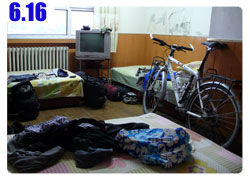

雨後的天空
之前早上都會被太陽給曬醒，今天則睡的很涼爽，一睡醒就看到窗外的天空陰陰的。
從這個窗口看出去的景色，已經看了將近一個星期，我每天都趴在窗戶邊享用免費的無線網路上網。
天空看起來就是隨時會下雨的樣子，只是什麼時候下，以及什麼時候停的問題，早上要等著銀行開門和白大哥去領錢，
在這之前哪也去不了，就下去樓下吃了一碗八寶粥配三個水煎包，然後回房間打包行李，等著時間一分一秒過去。
十一點的時候去交通銀行，款項終於進來了，領出美金然後兌換了部分的人民幣，接下來一路騎到莫斯科的旅費終於都有著落了。
一走出銀行就開始下起了雨，颳著冷颼颼的風，該下的還是下了，不能因為這一點雨就打消今天的出發計劃，冒著雨還是得出發。
回旅館將小多掛上背包帶到一樓，招待所的員工說今天有中量雨，叫我多住一天再走吧。
不行，已經住太多天了，再住下去就跟定居在烏魯木齊沒兩樣了呀。
早上去銀行領錢的緣故，所以出發的時間就拖到過了中午。
為了避免等一下手忙腳亂，所以先乖乖的穿上雨衣，然後在風雨飄緲中出發了。
大城市對我來說都有一種障礙，要騎進去很困難，要騎出來更是不容易，裡面的路實在太複雜了，
雨大概下了一個半小時之後就瞬間停止，然後雲層散開的很快，冰藍的天空和胖胖的白雲相搭襯。
看著手上的烏魯木齊地圖，還是迷路繞來繞去，這幾天都沒有去烏魯木齊火車站，結果離開的時候居然騎到烏魯木齊機場去了。
下過雨的天空特別藍，雲朵的高度很低，遠方的雲就像是放在地上一樣，而頭上的雲則是伸手就能觸碰到的感覺。
從機場回頭再騎一段路，等通過這個收費站之後，就算離開烏魯木齊市區了，這是旅行以來待最久的一個城市。
本來應該騎的312國道不知道跑哪去了，怎麼也找不到，所以就騎在322省道上，旁邊就是高速公路。
這邊的路反常的都很小條，沒什麼路肩，所以車子經過我的時候又開始叭我，要我讓路閃邊一點。
到昌吉市之後，又進入了一個比較大的城市，此時我還在懷念烏魯木齊的多種樣貌，所以這邊沒能引起我太多注意。
312國道終於又出現了，輕輕拍一下路邊的道路石碑，嗨！好久不見了～引導著我騎到哈薩克的邊界吧。
午餐在郊區的小餐館吃，說是午餐，但是此時此刻已經是下午四點半，肚子已經餓的咕嚕咕嚕叫，再不吃東西我就要低血糖昏倒在路邊了。
吃完炒麵，問一下往石河子的路怎麼樣？因為今天出發的比較晚，所以目前距離目的地還很遠，除非騎到深夜，不然肯定到不了。
既然這樣那就不勉強一定要騎到石河子，換一個近一點的地方騎，明天早點起床再補騎這一段就好了。
312國道雖然出現了，但是很機車的掛出了禁行自行車的牌子，當然是可以忽視它繼續騎，只是這邊的路實在很小條，國道上的卡車又多，
萬一被擦到一丁點，我都會摔得人仰馬翻，在國道的旁邊有一條平行而走的省道，車子相對之下少很多，所以我就乖乖的騎在省道上面。
吃完飯後沒有休息一下就馬上騎車的緣故，整個人很沒有力，只能慢慢的騎。
省道上有人很機車的到處灑一些柏油類的東西，都是熱的液體狀，一時沒閃過就騎過去，車胎馬上就沾上了柏油。
接著每踩一下踏板就會聽到輪胎黏住地面，然後又被拔起來的聲音，停下車來一看輪胎，都因為沾到柏油的關係而黏住一堆的小石頭。
用手剔除掉石頭之後再騎一段路，馬上又沾滿了小石頭，非常煩人，好加在還沒有換新的外胎，不然剛換就沾上柏油那真是叫人吐血。
就這麼邊騎邊黏馬路，慢慢的往太陽西下的方向走，看什麼時候會出現村莊讓我落腳。
因為這邊到處都是田地和綠意，不像之前走的戈壁灘那麼沒生機，所以十幾公里就會出現村莊。
猛一看這邊還挺像河西走廊的，只是這邊比較寬闊，沒有河西走廊那麼窄。
省道騎沒多久就騎完了，硬著頭皮上禁行的國道，一路被大卡車叭著走，我自己也很怕會被撞到。
晚上八點的時後距離石河子還有六十公里，真的是騎不到了，明天再說吧，現在只求趕緊出現個村莊來。
村莊出現都有公式可以推導一下，如果旁邊的農田突然變得比較活潑，或是有看到幾間郊區的工廠，
那就表示這邊有人煙，有人煙的話就會有房子，房子就會構成村莊，村莊裡必然會有商店、餐廳，好一點的就可以住宿。
騎到九點的時候，國道上居然變成了市集，好熱鬧的國道呀，旁邊則是一個像菜市場的地方。
這邊就是大丰鎮，不算太大的地方，整個鎮就圍著一個正方形的市場而成，所以很熱鬧。

順利的在這邊找到十元的住宿處，房間雖小但也還過得去，只要小多可以放的進來就好了。
晚餐在市場內吃了拌麵，吃了這麼多天的麵跟飯，真的慢慢可以領悟到『飯只能吃飽，吃麵明天才有力氣。』這句話的涵義。
繼續閱讀：6.16 長鼻子大叔

中國-人民幣－ 1：4.3 台幣
6.15 |
總計：26.5元 |
早餐八寶粥、水煎包2元、午餐炒麵5元、晚餐拌麵7元、雜貨店雪餅2.5元、住店10元 |
|